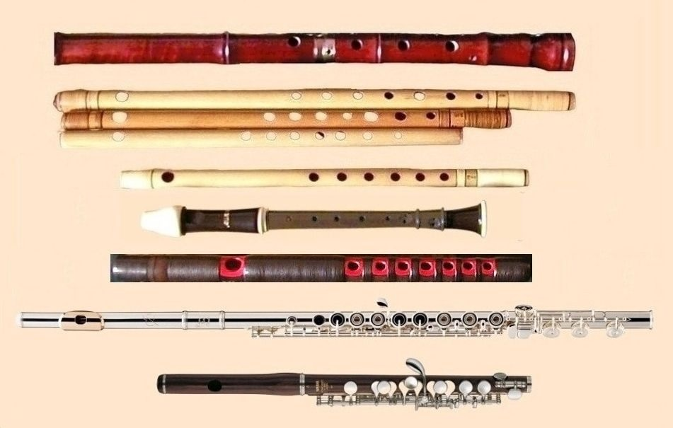

Flautul
Istoria Descriere Tipuri

Flautul face parte dintr-o familie de instrumente muzicale din grupa instrumentelor de suflat din lemn. La fel ca toate instrumentele de suflat din lemn, flautele sunt aerofone, producând sunet printr-o coloană de aer care vibrează. Flautele produc sunet atunci când aerul suflat de interpret trece peste o deschidere. În sistemul de clasificare Hornbostel–Sachs, flautele sunt considerate aerofone cu suflu lateral. Un muzician care cântă la flaut este numit flautist.
Flauturi paleolitice cu găuri realizate manual sunt cele mai vechi instrumente muzicale identificabile cunoscute. Mai multe flaute datate între aproximativ 53.000 și 45.000 de ani au fost descoperite în regiunea Swabian Jura din actuala Germanie, indicând existența unei tradiții muzicale dezvoltate încă din cele mai timpurii perioade ale prezenței omului modern în Europa.
Deși cele mai vechi flaute cunoscute au fost găsite în Europa, și Asia are o lungă istorie legată de acest instrument. Un flaut funcțional din os, descoperit în China, a fost datat la aproximativ 9.000 de ani. Americile au avut, de asemenea, o cultură veche a flautului, cu instrumente descoperite în Caral, Peru, datând de acum 5.000 de ani și în Labrador, datând de aproximativ 7.500 de ani.
Istoria flautului

Un fragment din femurul unui urs de peșteră tânăr, cu două până la patru găuri, a fost descoperit la Divje Babe în Slovenia și a fost datat la aproximativ 43.000 de ani. Acesta ar putea fi cel mai vechi flaut descoperit, însă această ipoteză este disputată.
În 2008, un flaut datat la cel puțin 35.000 de ani a fost descoperit în peștera Hohle Fels, lângă Ulm, Germania. Este un flaut cu cinci găuri, cu un muștiuc în formă de V, realizat dintr-un os de aripă de vultur. Descoperirea a fost publicată în revista Nature în august 2009. Acesta a fost cel mai vechi instrument muzical confirmat vreodată descoperit, până când o redatare a flautelor din peștera Geißenklösterle a indicat că acestea sunt mai vechi, având între 42.000 și 43.000 de ani.
Flautul din Hohle Fels este unul dintre mai multe descoperite în acea peșteră, lângă Venus din Hohle Fels și nu departe de cea mai veche sculptură umană cunoscută. La anunțarea descoperirii, oamenii de știință au sugerat că „aceste descoperiri demonstrează existența unei tradiții muzicale bine stabilite în perioada colonizării Europei de către oamenii moderni”.
Cercetătorii au sugerat, de asemenea, că această descoperire ar putea ajuta la explicarea „diferențelor probabile comportamentale și cognitive” dintre neanderthalieni și oamenii moderni timpurii.
Un flaut de 18,7 cm, cu trei găuri, realizat dintr-un colț de mamut și datat între 30.000 și 37.000 de ani, a fost descoperit în 2004 în peștera Geißenklösterle, lângă Ulm, în regiunea Swabian Alb, sudul Germaniei. Două flaute din oase de lebădă au fost excavate cu un deceniu mai devreme din aceeași peșteră și au fost datate la aproximativ 36.000 de ani.
Un flaut chinezesc funcțional, Gudi (literal, „flaut de os”), vechi de 9.000 de ani, a fost scos la iveală dintr-un mormânt din Jiahu, împreună cu alte 29 de exemplare similare. Acestea au fost realizate din oasele aripilor cocorilor cu coroană roșie și fiecare avea între cinci și opt găuri.
Cel mai vechi flaut transversal chinez păstrat este un chi (篪), descoperit în mormântul Marchizului Yi din Zeng, la situl Suizhou, în provincia Hubei, China, datând din 433 î.Hr., în timpul dinastiei Zhou târzii. Acesta este realizat din bambus lăcuit, cu capete închise, și are cinci orificii plasate pe lateralul flautului, nu deasupra. Shi Jing, considerată tradițional ca fiind compilată și editată de Confucius, menționează flautele chi.

Flaut confecționat din tibie de capră (sec. XI-XIII d.Hr.)
Cea mai veche referire scrisă la un flaut provine de pe o tăbliță cuneiformă în limba sumeriană, datată în jurul anilor 2600–2700 î.Hr. Flautele sunt menționate și într-o tăbliță recent tradusă a Epopeii lui Ghilgameș, o poezie epică a cărei dezvoltare s-a întins între aproximativ 2100 și 600 î.Hr.
Un set de tăblițe cuneiforme cunoscute sub numele de „texte muzicale” oferă instrucțiuni precise pentru acordarea a șapte game ale unui instrument cu coarde (presupus a fi o liră babiloniană). Una dintre aceste game este numită „embūbum”, un cuvânt akkadian care înseamnă „flaut”.
Biblia, în Geneza 4:21, îl menționează pe Iubal ca fiind „tatăl tuturor celor ce cântă la ugab și kinnor”. Primul termen ebraic este considerat de unii a se referi la un instrument de suflat, sau la instrumente de suflat în general, iar cel de-al doilea la un instrument cu coarde, sau la instrumente cu coarde în general. Astfel, Iubal este considerat în tradiția iudeo-creștină drept inventatorul flautului (termen folosit în unele traduceri ale acestui pasaj biblic).
În alte secțiuni ale Bibliei (1 Samuel 10:5, 1 Regi 1:40, Isaia 5:12 și 30:29, și Ieremia 48:36), flautul este menționat ca „chalil”, de la rădăcina cuvântului care înseamnă „gol”.
Săpături arheologice în Țara Sfântă au scos la iveală flaute din Epoca Bronzului (cca. 4000–1200 î.Hr.) și din Epoca Fierului (1200–586 î.Hr.), ultima fiind perioada în care „a fost creat regatul Israel și s-a produs separarea în cele două regate: Israel și Iudeea.”
Unele flaute timpurii erau realizate din tibii (oasele gambei). Flautul a fost întotdeauna o parte esențială a culturii indiene, iar flautul transversal este considerat de mai multe surse ca având originea în India, literatura indiană din jurul anului 1500 î.Hr. făcând referiri vagi la acest tip de flaut.
O descriere a instrumentului

Interiorul flautului dulce
Un flaut produce sunet atunci când un curent de aer direcționat peste o deschidere a instrumentului generează o vibrație a aerului în acea zonă.
Jetul de aer creează un efect Bernoulli sau de sifon, care pune în vibrație aerul conținut în cavitatea rezonantă (de obicei cilindrică) din interiorul flautului. Flautistul modifică înălțimea sunetului deschizând și închizând găuri în corpul instrumentului, modificând astfel lungimea efectivă a rezonatorului și frecvența sa de rezonanță. Prin varierea presiunii aerului, flautistul poate, de asemenea, modifica înălțimea sunetului determinând aerul din flaut să rezoneze la o armonică în loc de frecvența fundamentală, fără a schimba nicio gaură.
Geometria capătului flautului (capul instrumentului) pare a fi deosebit de importantă pentru performanțele acustice și tonalitate, însă nu există un consens clar între producători cu privire la o formă ideală.
Impedanța acustică a deschiderii embouchure (locul unde suflă interpretul) este considerată parametrul cel mai critic. Variabilele cheie care influențează această impedanță includ: lungimea canalului (deschiderea dintre placa buzelor și tubul capului), diametrul canalului, și razele sau curburile extremităților canalului, precum și orice îngustare proiectată în „gâtul” instrumentului, așa cum se observă la flautul japonez Nohkan.
Un studiu în care flautiști profesioniști au fost legați la ochi nu a identificat diferențe semnificative între flaute realizate din diverse metale. În două serii de audiții „oarbe”, niciun flaut nu a fost recunoscut corect în prima audiție, iar în a doua doar flautul de argint a fost identificat corect. Studiul a concluzionat că „nu există dovezi că materialul din care este realizat corpul are vreun efect apreciabil asupra culorii sonore sau gamei dinamice”.
Istoric, flautele erau realizate cel mai frecvent din trestie, bambus, lemn sau alte materiale organice. Au fost realizate și din sticlă, os și nefrit.
Cele mai multe flaute moderne sunt din metal, în special argint și nichel. Argintul pur este mai rar decât aliajele de argint. Alte materiale folosite includ aurul, platina, grenadilla și cuprul.
Diferitele tipuri de flaut
Există două tipuri principale de flauturi:
- Flautul traverso: Acesta este cel mai comun tip de flaut și este făcut din metal, cum ar fi argint sau aur. Flautul traverso are o gaură pentru suflat în partea superioară și găuri de degete pe care jucătorul le acoperă și le descoperă pentru a produce diferite note. Este utilizat în muzica clasică, jazz și în multe alte genuri muzicale.
-
Flautul dulce: Acesta este făcut din lemn și este cunoscut pentru sunetul său dulce și lin. Flautul dulce are un număr variabil de găuri și este folosit în special în muzica renascentistă și în muzica de epocă.
Flautul este un instrument versatil, iar interpretii de flaut pot produce o gamă largă de sunete și efecte sonore. Acesta poate fi folosit ca instrument solist, în muzica de cameră sau în orchestră.
Flautul dulce
A fost un instrument deosebit de popular în Renaștere și Baroc. Continuă să fie popular în școli datorită simplității în folosire. A fost folosit în mari compoziții de Haendel, Bach, Telemann etc. alături de clavecin. Exemplu: Trio sonata în fa major pentru flaut dulce și Basso Continuo de Haendel
Este construit din lemn sau material plastic. Cavitatea rezonantă este conică, cu o extremitate superioară ușor mai largă decât cea inferioară, ceea ce duce la predominanța armonicelor impare în sunet[1]. În partea superioară prezintă un orificiu numit ambușură sau (lat. labium), prevăzut cu un canal trapezoidal. Coloana de aer este direcționată (B) spre o deschizătură (C) - șanț longitudinal care se găsește în peretele tubului în partea din față - și are formă de canelură. O parte din aer intră în tub, iar restul se pierde în afara lui. Instrumentul prezintă pe partea frontală un număr variabil de orificii digitale (șapte, dintre care cele mai îndepărtate două de ambușură pot fi găuri duble) și unul singur pe partea din spate.
Flautul dulce se împarte în flaut dulce sopranino, sopran, alto, tenor, bas, etc. Dintre acestea, cel sopranino, alto și bas sunt construite în Fa, iar cel sopran și tenor în Do. Flautul soprano mai este cunoscut și sub numele de diskant sau deskant.
Flautul dulce are un ambitus de 2 octave și jumătate, sunetele din ocava a treia putând fi luate numai de suflători experimentați:
- flautul sopranino de la Fa2 la Sol4
- flautul sopran de la Do2 la Re4
- flautul alto de la Fa1 la Do3
- flautul tenor de la Do1 la Sol3
- flautul bas de la Fa la Sol2

Flaut dulce
Flaut traverso